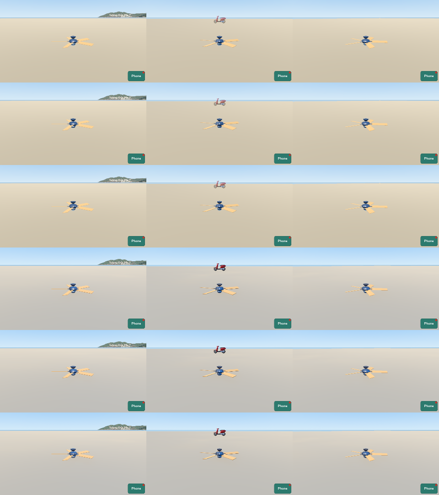
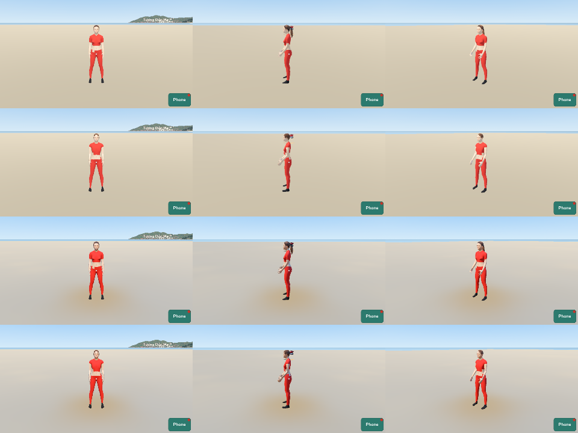
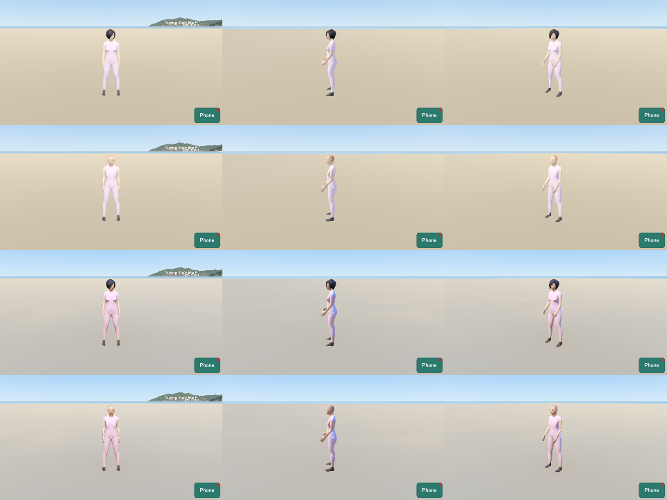
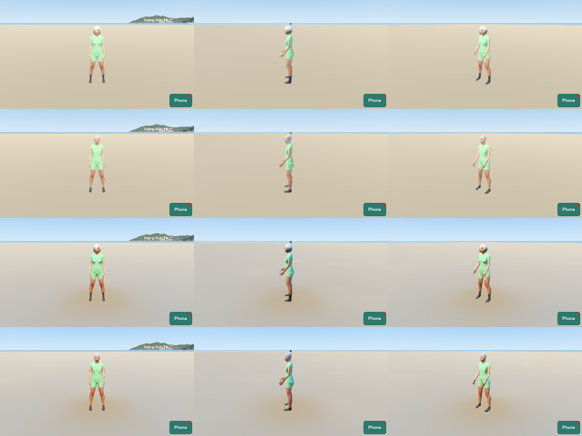
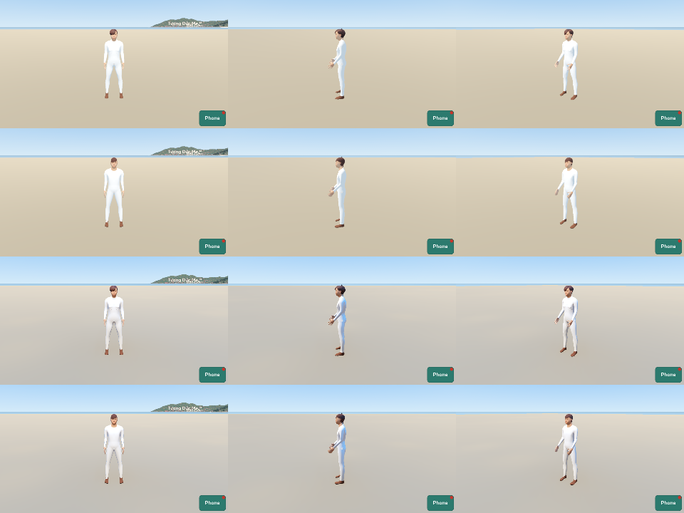
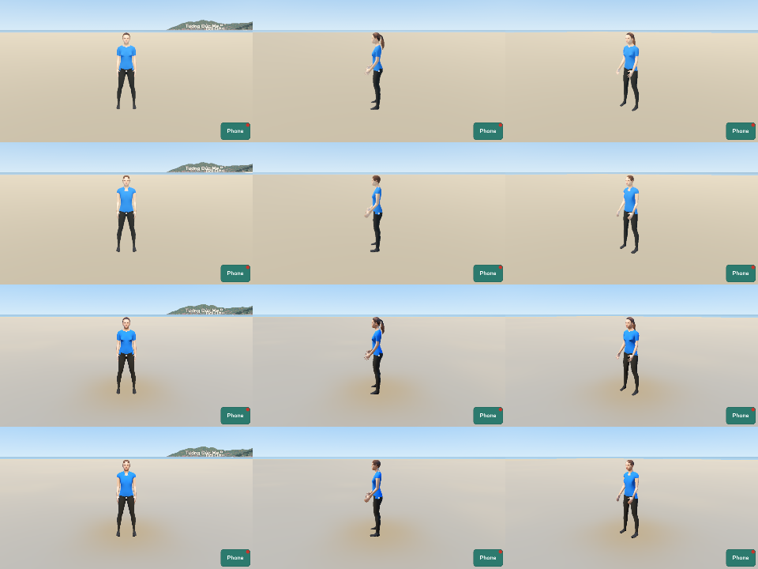
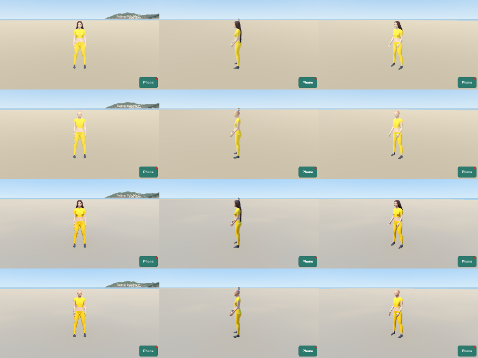
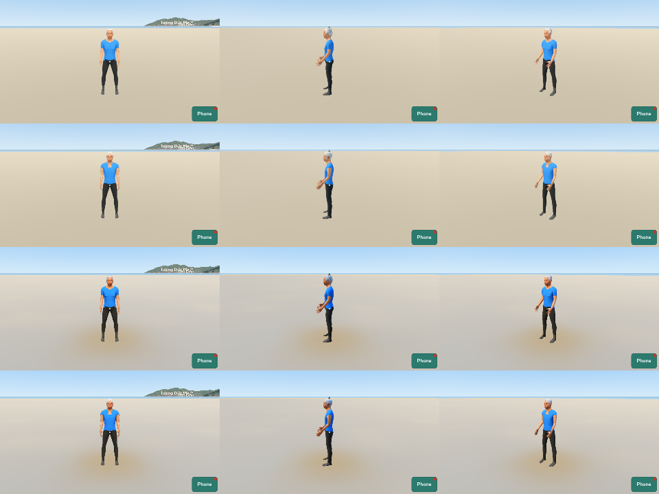

The models of World in Vũng Tàu
Plan 0023, PT-56. World commit 9dae4538d6af6fccc64cac6f9e1c7d0b081ddcf2. The game gives the materials and the light.
scooter_tay_ga_1
Catalog V1. Plan 0023, R9a: the parked scooters of the test street and of the Vũng Tàu world. Plans 0009 and 0018.
Order: {"blueprint": "catalog", "options": {"name": "honda_vision_110"}}, hash 176593c8c18de6bff70b0189e26ee31a.
- Honda Vision 110 (2021, Việt Nam): length 1871 mm, width 686 mm, height 1101 mm, wheelbase 1255 mm, seat 761 mm.
- Tires: 80/90-14 at the front, 90/90-14 at the back; a disc brake of 190 mm at the front.
- The shapes of the body, the seat and the engine: by eye, from photos of the scooter.
Rows: Low near, mid, far; High near, mid, far. Columns: front, side, three quarters. 12:00.

ceiling_fan
Catalog S4. Plan 0023, R9c: the ceiling fan of the front room of each shop of the test street, with the phở shop. Plan 0011.
Order: {"blueprint": "catalog", "options": {"name": "ceiling_fan_52in"}}, hash 3baef58f1befc276ff522c7260a595a4.
- A ceiling fan of 52 in, a common size (the size of DIY: 52 by 52 by 12 in, no source).
Rows: Low near, mid, far; High near, mid, far. Columns: front, side, three quarters. 12:00.

aerobics_leader
Catalog P7. Plan 0023, R9d: the aerobics group of the morning exercise at Bãi Trước, 05:00 to 06:30. The leader faces the group.
Order: {"blueprint": "person", "options": {"gender": 0.0, "age": 44, "height": 0.5, "weight": 0.42, "skin": "middleage_asian_female", "eyebrows": "eyebrow010", "hair": "ponytail01", "clothes": ["female_sportsuit01", "shoes03"], "clothes_colors": ["#c4362c"], "animations": ["aerobics"]}}, hash 2816a8194761e78dacde414f636e74d7.
- MakeHuman (CC0): the base mesh, the targets, the skeleton game_engine, and the assets middleage_asian_female, female_sportsuit01, shoes03.
Rows: Low near, mid, far; High near, mid, far. Columns: front, side, three quarters. 12:00.

aerobics_1
Catalog P7. Plan 0023, R9d: the aerobics group of the morning exercise at Bãi Trước, 05:00 to 06:30.
Order: {"blueprint": "person", "options": {"gender": 0.0, "age": 52, "height": 0.38, "weight": 0.55, "skin": "middleage_asian_female", "eyebrows": "eyebrow010", "hair": "bob02", "clothes": ["female_casualsuit01", "shoes02"], "clothes_colors": ["#e9c7d8"], "animations": ["aerobics"]}}, hash e3cc3faf21202dae59cf784301dc9bb5.
- MakeHuman (CC0): the base mesh, the targets, the skeleton game_engine, and the assets middleage_asian_female, female_casualsuit01, shoes02.
Rows: Low near, mid, far; High near, mid, far. Columns: front, side, three quarters. 12:00.

aerobics_2
Catalog P7. Plan 0023, R9d: the aerobics group of the morning exercise at Bãi Trước, 05:00 to 06:30.
Order: {"blueprint": "person", "options": {"gender": 0.0, "age": 61, "height": 0.33, "weight": 0.6, "skin": "old_asian_female", "eyebrows": "eyebrow010", "hair": "bob02", "hair_color": "#b4b2ac", "clothes": ["female_casualsuit02", "shoes05"], "clothes_colors": ["#9bd39a"], "animations": ["aerobics"]}}, hash 855142b6240530df29231da8adebf47b.
- MakeHuman (CC0): the base mesh, the targets, the skeleton game_engine, and the assets old_asian_female, female_casualsuit02, shoes05.
Rows: Low near, mid, far; High near, mid, far. Columns: front, side, three quarters. 12:00.

aerobics_3
Catalog P7. Plan 0023, R9d: the aerobics group of the morning exercise at Bãi Trước, 05:00 to 06:30.
Order: {"blueprint": "person", "options": {"gender": 1.0, "age": 58, "height": 0.45, "weight": 0.5, "skin": "middleage_asian_male", "eyebrows": "eyebrow001", "hair": "short03", "clothes": ["male_casualsuit03", "shoes01"], "clothes_colors": ["#f2f2f2"], "animations": ["aerobics"]}}, hash 2ce31c16d125a48f96bf28dd5629fc4f.
- MakeHuman (CC0): the base mesh, the targets, the skeleton game_engine, and the assets middleage_asian_male, male_casualsuit03, shoes01.
Rows: Low near, mid, far; High near, mid, far. Columns: front, side, three quarters. 12:00.

aerobics_4
Catalog P7. Plan 0023, R9d: the aerobics group of the morning exercise at Bãi Trước, 05:00 to 06:30.
Order: {"blueprint": "person", "options": {"gender": 0.0, "age": 39, "height": 0.52, "weight": 0.4, "skin": "young_asian_female", "eyebrows": "eyebrow010", "hair": "ponytail01", "clothes": ["joepal_crude_t-shirt_female", "cortu_cargo_pants", "shoes04"], "clothes_colors": ["#2f72c4"], "animations": ["aerobics"]}}, hash ee169e81c7215f9226ee8fd57214662f.
- MakeHuman (CC0): the base mesh, the targets, the skeleton game_engine, and the assets young_asian_female, joepal_crude_t-shirt_female, cortu_cargo_pants, shoes04.
Rows: Low near, mid, far; High near, mid, far. Columns: front, side, three quarters. 12:00.

aerobics_5
Catalog P7. Plan 0023, R9d: the aerobics group of the morning exercise at Bãi Trước, 05:00 to 06:30.
Order: {"blueprint": "person", "options": {"gender": 0.0, "age": 47, "height": 0.42, "weight": 0.62, "skin": "middleage_asian_female", "eyebrows": "eyebrow010", "hair": "ponytail01", "clothes": ["female_sportsuit01", "shoes06"], "clothes_colors": ["#f2c33c"], "animations": ["aerobics"]}}, hash 97475aa6f60c3c9c7998cd4b6bea8d3c.
- MakeHuman (CC0): the base mesh, the targets, the skeleton game_engine, and the assets middleage_asian_female, female_sportsuit01, shoes06.
Rows: Low near, mid, far; High near, mid, far. Columns: front, side, three quarters. 12:00.

aerobics_6
Catalog P7. Plan 0023, R9d: the aerobics group of the morning exercise at Bãi Trước, 05:00 to 06:30.
Order: {"blueprint": "person", "options": {"gender": 1.0, "age": 64, "height": 0.4, "weight": 0.45, "skin": "old_asian_male", "eyebrows": "eyebrow001", "hair": "short04", "hair_color": "#b4b2ac", "clothes": ["elvs_crude_t-shirt_male", "cortu_cargo_pants", "shoes02"], "clothes_colors": ["#2f72c4"], "animations": ["aerobics"]}}, hash dfc034633a36d5b8aa7305b8c918e929.
- MakeHuman (CC0): the base mesh, the targets, the skeleton game_engine, and the assets old_asian_male, elvs_crude_t-shirt_male, cortu_cargo_pants, shoes02.
Rows: Low near, mid, far; High near, mid, far. Columns: front, side, three quarters. 12:00.
